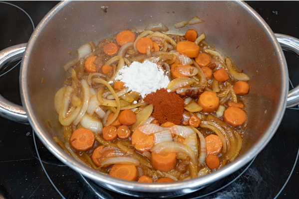

Salpimentando los trozos de pollo y dorándolos a fuego fuerte en una cocerlo. Una vez dorados, los retiramos y reservamos.
En esa misma cazuela, pochamos la cebolla, el ajo y las zanahorias. No os preocupeis si esta el fondo medio pegado que luego los desglasamos con vino.
Con las verduras pochadas añadimos un vaso de vino y dejamos que se evapore el alcohol por completo. Si no tienes vino blanco, puedes usar vino rancio, brandy, coñac…
Agregamos una cucharada de pimentón y de harina. Cocinamos unos segundos.
Reincorporamos el pollo dorado, cubrimos de caldo de pollo y ponemos una hojita de laurel. Dejamos cocinar 40 minutos a fuego lento.
Retiramos el pollo y trituramos las verduras. Este paso a mi me encanta porque deja una salsa fina deliciosa pero te lo puedes saltar si quieres.

Por ultimo, te dejo aqui este enlace en el que puedes buscar información adicional a la receta